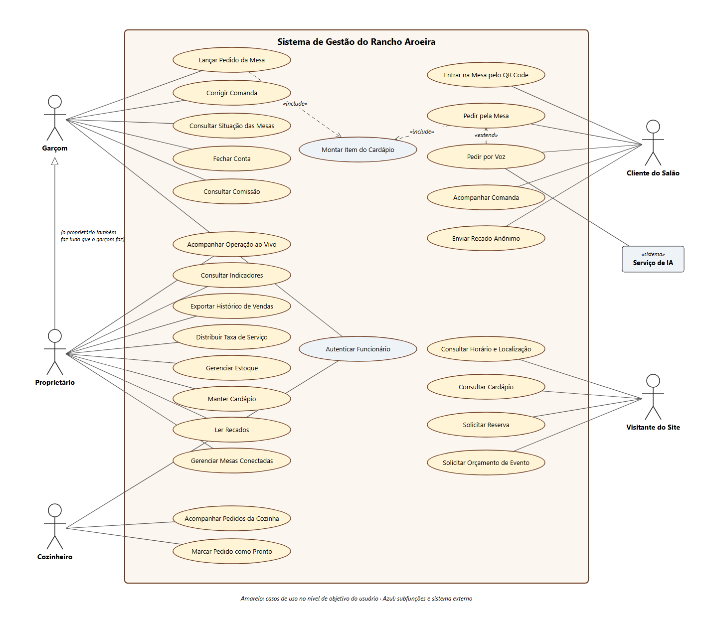

Casos de Uso — Sistema de Gestão do Rancho Aroeira
EEL873 — Engenharia de Software (UFRJ, 2026/2) · Grupo F
1. Diagrama de casos de uso

(Versão vetorial: diagrama-casos-de-uso.svg)

Atores
| Ator | Tipo | Papel |
|---|---|---|
| Garçom | Pessoa | Lança pedidos, acompanha as mesas e fecha contas |
| Proprietário | Pessoa | Gestão da casa. Especializa o Garçom: faz tudo o que o garçom faz, mais a gestão |
| Cozinheiro | Pessoa | Prepara os pedidos que chegam ao monitor da cozinha |
| Cliente do Salão | Pessoa | Pede e acompanha a comanda pelo celular, lendo o QR code da mesa |
| Visitante do Site | Pessoa | Consulta informações da casa e faz reservas e pedidos de orçamento |
| Serviço de IA | Sistema externo | Transcreve e interpreta a fala do cliente no pedido por voz |
Casos de uso (26)
| Ator | Casos de uso |
|---|---|
| Garçom | Lançar Pedido da Mesa · Corrigir Comanda · Consultar Situação das Mesas · Fechar Conta · Consultar Comissão |
| Proprietário | Acompanhar Operação ao Vivo · Consultar Indicadores · Exportar Histórico de Vendas · Distribuir Taxa de Serviço · Gerenciar Estoque · Manter Cardápio · Ler Recados · Gerenciar Mesas Conectadas (e, por herança, todos os do Garçom) |
| Cozinheiro | Acompanhar Pedidos da Cozinha · Marcar Pedido como Pronto |
| Cliente do Salão | Entrar na Mesa pelo QR Code · Pedir pela Mesa · Pedir por Voz · Acompanhar Comanda · Enviar Recado Anônimo |
| Visitante do Site | Consultar Horário e Localização · Consultar Cardápio · Solicitar Reserva · Solicitar Orçamento de Evento |
| Subfunções | Montar Item do Cardápio (tamanho, ponto da carne e acompanhamentos), incluída por Lançar Pedido da Mesa e Pedir pela Mesa · Autenticar Funcionário, usada por garçom, proprietário e cozinheiro |
Relações: Pedir por Voz estende Pedir pela Mesa (é inserido quando o cliente escolhe falar ou escrever em vez de tocar no cardápio). Lançar Pedido da Mesa e Pedir pela Mesa incluem Montar Item do Cardápio, para que garçom e cliente montem o item com as mesmas regras.
Escopo e nível: todos os casos de uso estão no escopo sistema, caixa-preta e no nível objetivo do usuário (uma pessoa, uma sessão), exceto as duas subfunções.
2. Casos de uso descritos — uma entrega por integrante
Cada integrante descreve de forma completa um dos maiores casos de uso, em arquivo próprio (Markdown para leitura no GitHub e PDF):
| Integrante | Caso de uso | Arquivo | |
|---|---|---|---|
| João Paulo Garcia | UC01 — Pedir pela Mesa | UC01-Joao-Paulo-Garcia.md | |
| Gabriel dos Santos Percu Saldanha | UC02 — Lançar Pedido da Mesa | UC02-Gabriel-Saldanha.md | |
| Henrique Gebara | UC03 — Fechar Conta | UC03-Henrique-Gebara.md | |
| Danilo Santiago Baptista | UC04 — Pedir por Voz | UC04-Danilo-Baptista.md |